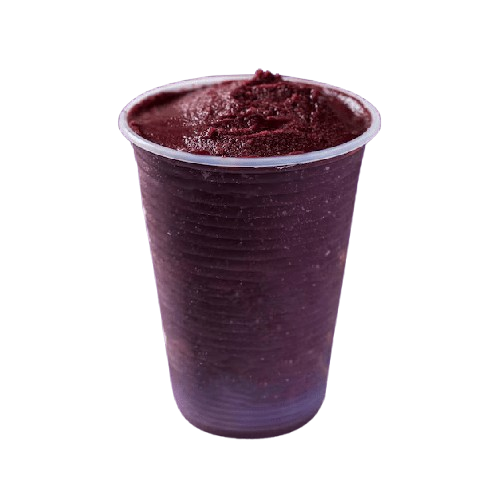
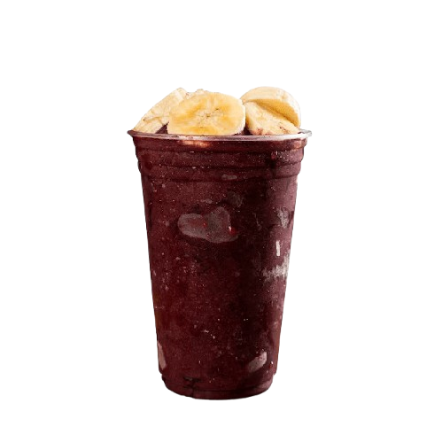
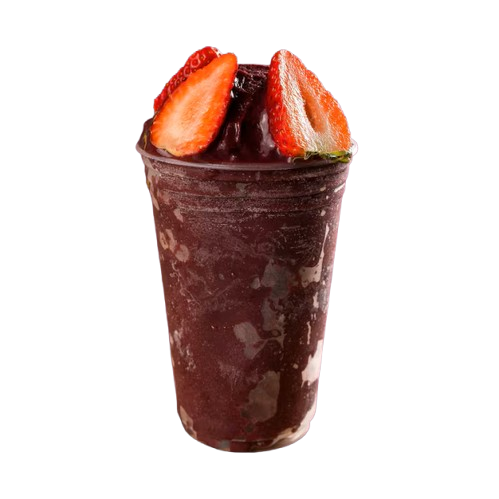
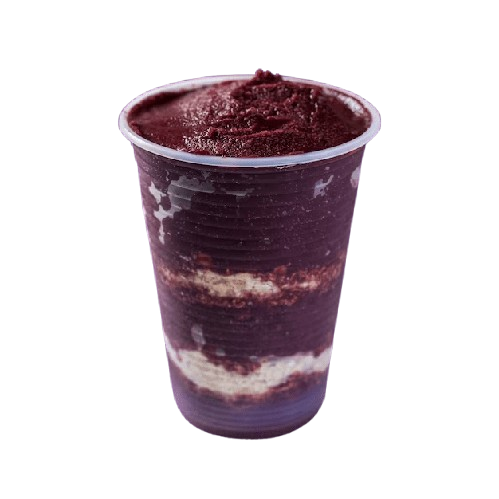

Bem-vindo ao Açaí da Cris!
Pronto para experimentar o melhor açaí do bairro?
Peça agora e descubra por que nossos clientes estão sempre voltando para mais.
Deixe o Açaí da Cris transformar seu dia com um toque de frescor e sabor.
Nossos Tipos de Açaí

Açaí Natural

Açaí batido
Açaí batido
com Banana

Açaí batido
Açaí batido
com Morango

Açaí batido